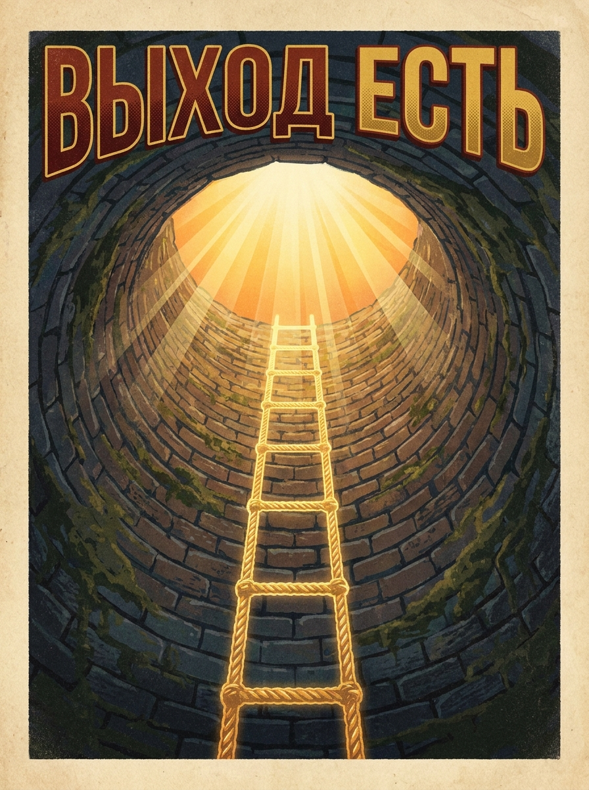

Посвящается Авьянге прабху и всем, кто думал, что семейная жизнь — это просто совместная санкиртана.
Помнишь, как мы жили в ашраме? Подъем в 4 утра, киртаны до потери голоса, полное отсутствие забот о том, откуда берется прасад на тарелке и кто оплачивает счета за электричество. Мы летали в духовных облаках.
А потом мы решили стать грихастхами.
Внезапно оказалось, что духовный прогресс теперь измеряется не часами прочитанной джапы, а умением не сойти с ума во время ремонта, найти деньги на подгузники и сохранить мирное умонастроение, когда планы рушатся в десятый раз за день. Ощущение, что ты сидишь в колодце, из которого не выбраться — это не паранойя. Это суровая философия.
Диагноз поставлен Шрилой Прабхупадой предельно точно.
«Он [Прахлада Махараджа] сравнивает так называемую счастливую семейную жизнь с заброшенным колодцем посреди поля. Такой колодец не видно из-за высокой травы, и человек, упавший в него, обречен на гибель, сколько бы он ни звал на помощь».
«Махараджа Прахлада сравнивал семейную жизнь с темным колодцем (хитва̄тма-па̄там̇ гр̣хам андха-кӯпам) и советовал как можно быстрее отойти от нее. Тот, кто не желает расставаться с семьей, просто убивает себя».
«Если же человек, из-за того что он не обуздал свои чувства, предпочитает прозябать в темном колодце семейной жизни, его все больше будут опутывать узы привязанности к жене, детям, слугам, дому, деньгам и прочему. Такой человек не в силах вырваться из плена материальной жизни...»
"Иногда кажется, что ты пытаешься бежать марафон с холодильником на спине."
«Пожалуйста, смилуйся надо мной и вызволи из глухого колодца семейной жизни, который я по ошибке считаю своим домом, чтобы я смог обрести настоящее прибежище у Твоих лотосных стоп — объекта постоянных поисков свободных от корысти мудрецов».
«Человек, свалившийся в колодец семейной жизни, должен ухватиться за эту веревку, и тогда духовный учитель, а значит, и Верховная Личность Бога, Кришна, непременно вытащит его оттуда».
«В „Бхагавад-гите“ (2.59) сказано: парам̇ др̣шт̣ва̄ нивартате — чтобы избавиться от низменных желаний, нужно обрести вкус к высшему. Иначе говоря, чтобы избавиться от привязанности к семейной жизни, нужно укрыться под сенью лотосных стоп Господа».
Как садхана, я постоянно размышляю над словами моего Духовного учителя, сказанными 22 сентября 2019 года. В тот день мы с супругой (Ади Лакшми матаджи) получили даршан Е.С. Шрилы Бхакти Вигьяны Госвами Махараджа, вступая в семейную жизнь. Эти слова — наш спасательный круг.
Об ожиданиях и служении: «Смысл простой, вы наверняка его знаете: надо стараться не ожидать ничего друг от друга, а служить, и наши ожидания естественным образом исполнятся, когда мы будем служить, то есть пытаться делать то, что нужно другому человеку. Если мы все время будем думать о своих ожиданиях от этих отношений, то наша жизнь превратится в ад. Потому что всегда будет что-то не так, не то, всегда будет неудовлетворенность, неудовлетворенность будет накапливаться, раздражение будет накапливаться.»
«Если мы не будем особенно на этом сосредотачиваться, а будем с благодарностью принимать то, что есть у другого и то, что другой нам дает, при этом стараться делать что-то и в этом находить счастье, тогда жизнь будет очень счастливой, не будет никаких поводов для недовольств.»
«Когда оба человека таким образом настроены, то Кришна вам разум даст, чтобы понять, что нужно другому человеку, как нужно себя вести. А если мы постоянно думаем о том, что нужно мне от этих отношений, то наш разум отключается и мы при этом не чувствуем другого человека, становимся все более и более черствыми.»
«Понятно, что мы запрограммированы на ожидания, мы хотим что-то получить, но это не должно быть доминантой наших отношений. На самом деле человек очень рад, когда он может что-то дать. Надо с радостью давать, что мы можем дать и с благодарностью принимать то, что дает другой. Тогда эти две эмоции — радость и благодарность — будут преобладать в нашем сердце и давать нам опыт счастья. Когда вместо радости у нас недовольство от того, что мы чего-то не получили и претензии к другому человеку, что он что-то не дал, тогда очень скучно все становится. Простая вещь, которую очень сложно исполнить.»

Грихамедхи — это тот, кто обустраивает колодец, вешает там обои и проводит интернет, забыв, что он в яме.
Грихастха — это тот, кто осознает, где он находится, и использует семью как лестницу, чтобы выбраться наверх. Да, прогресс замедлился. Да, мы стали тяжелее на подъем.
Но именно здесь, в этой жесткой мясорубке обязанностей, перемалывается наше ложное эго. Ожидания сгорают, и остается только чистое служение и прощение. То, что в ашраме казалось святостью, здесь проходит реальную проверку на прочность.
Давайте обсудим это вживую. Как сохранить искру, не сойти с ума от быта и остаться преданными в этом суровом ашраме.
Ждем всех (даже с детьми)